🏔️ 설산 지금까지 완성본 둘러보기
마을에서 산에 들어가 등산, 썰매, 결승, 산장 카페까지 실제 게임 화면을 순서대로 찍었습니다. (휴대폰 세로 화면)
1. 마을에서 산으로
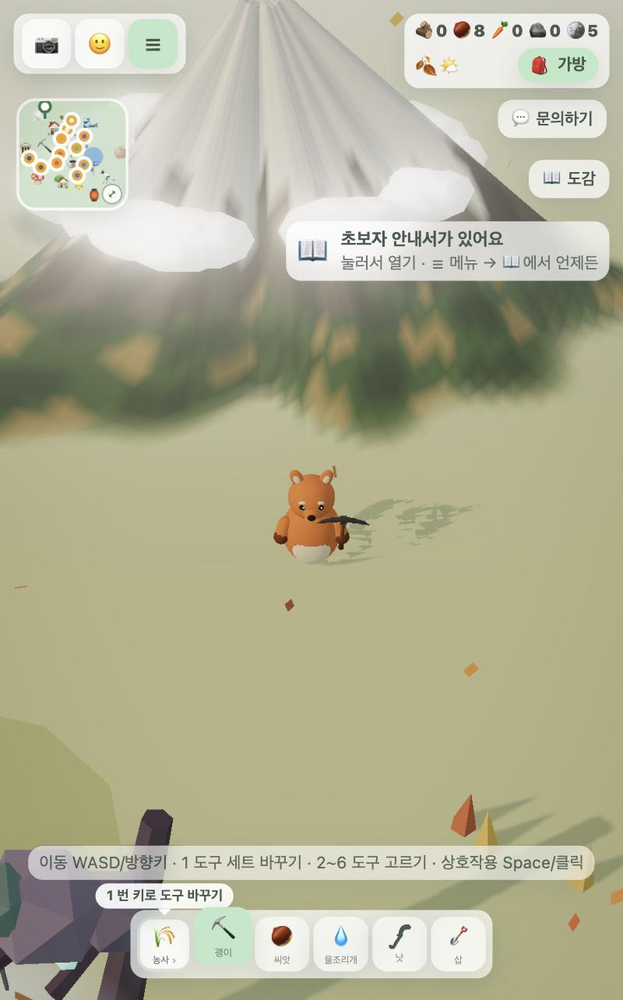
1마을에서 보이는 설산 랜드마크. 중턱 구름 띠, 앞 사면은 썰매 코스
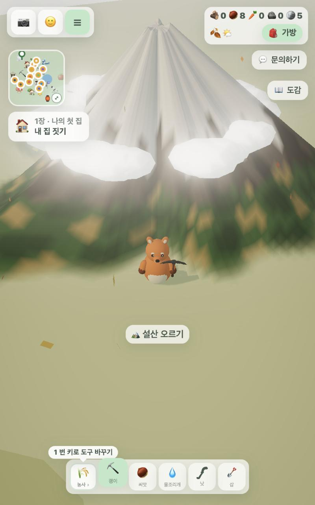
2산 앞에서 🏔️ 설산 오르기
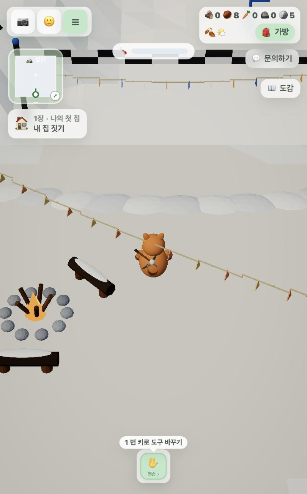
3산 아래 광장. 모닥불·벤치·결승선·눈 둔덕, 위쪽 🌡️ 추위 막대
2. 등산과 정상 산장
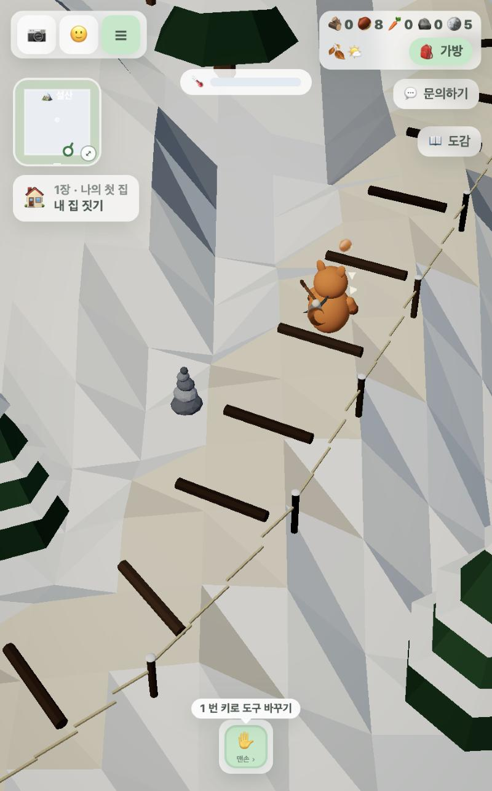
4등산로(통나무 계단·밧줄 울타리·돌탑)에서 🌰 도토리 줍는 순간
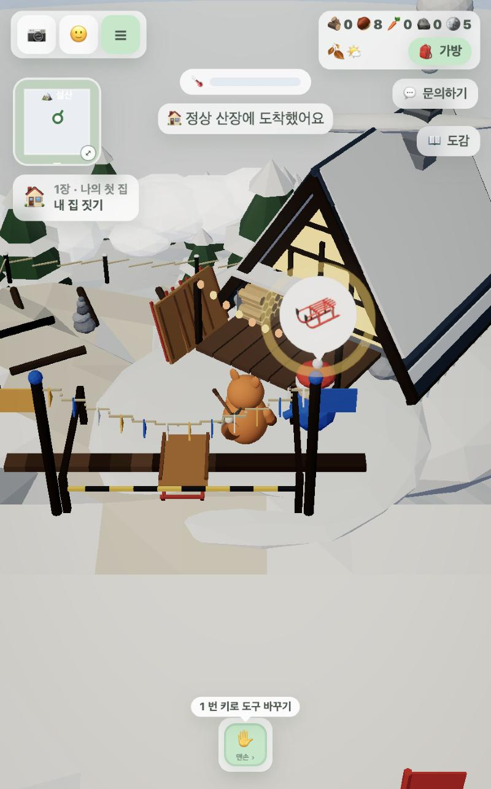
5정상 도착 안내, 썰매지기 말풍선 ☕ → 🛷
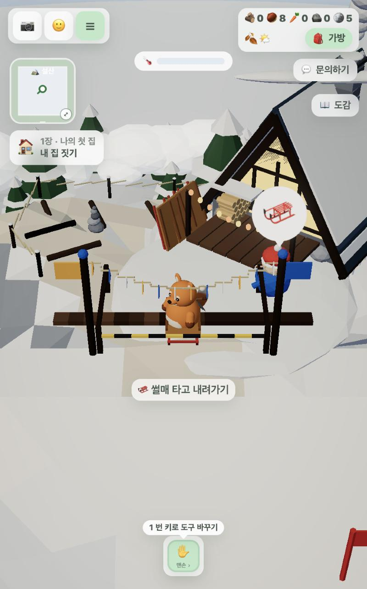
6출발대 🛷 썰매 타고 내려가기
3. 썰매와 결승
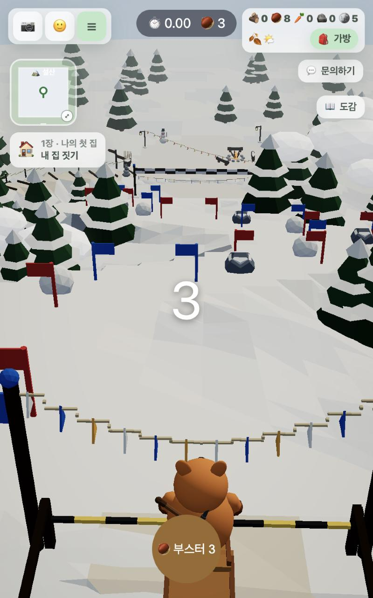
7카운트다운. 코스 전경, 가운데 🌰 부스터 버튼
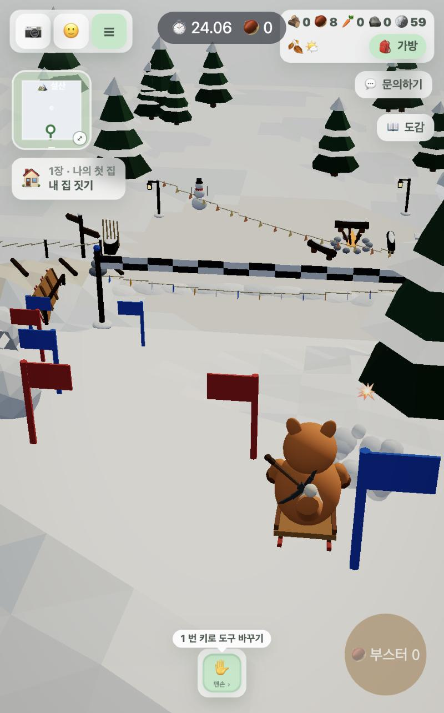
8장애물에 부딪히면 터짐(💥·눈보라)
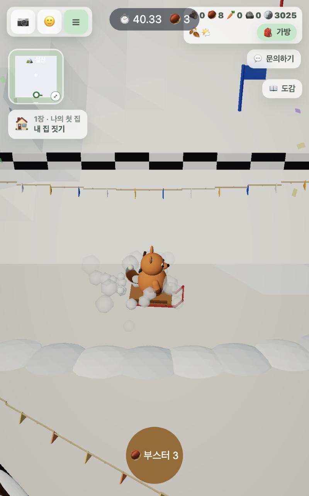
9결승 후 옆으로 돌며 눈보라를 튀기는 정지, 색종이
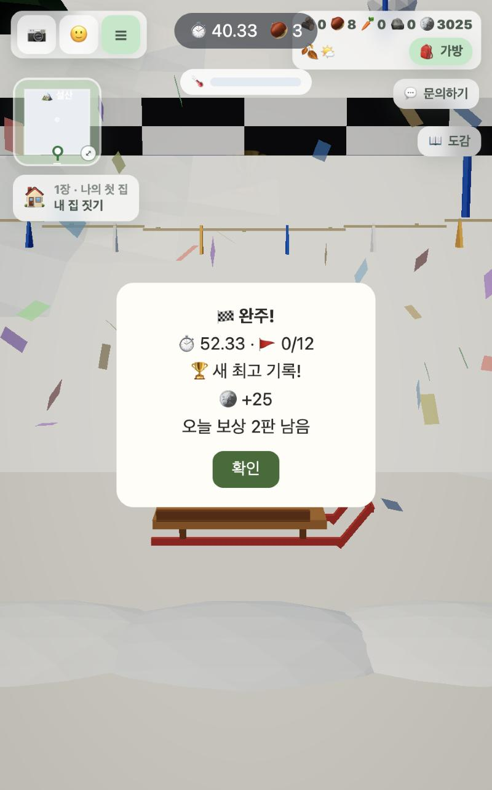
10결과 창(완주·새 기록·코인·오늘 남은 보상)
4. 산장 카페
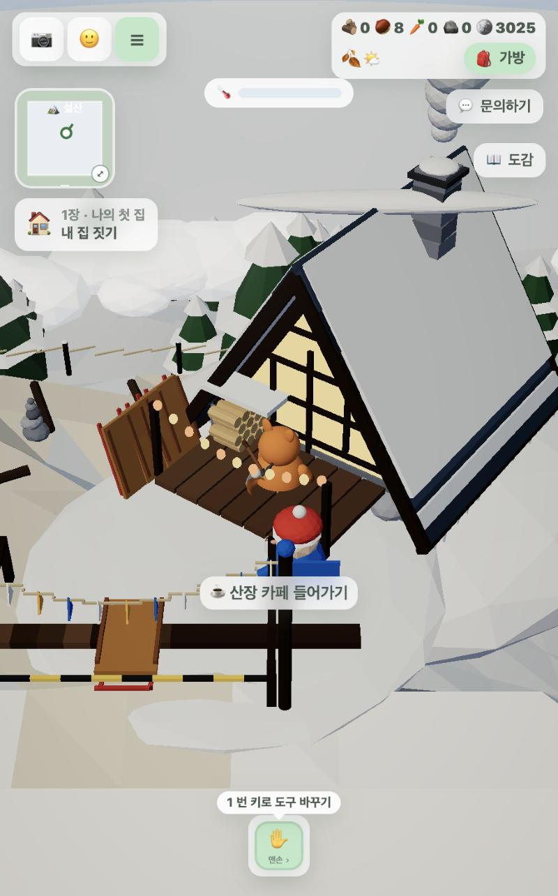
11정상 마당의 산장 문 ☕ 산장 카페 들어가기
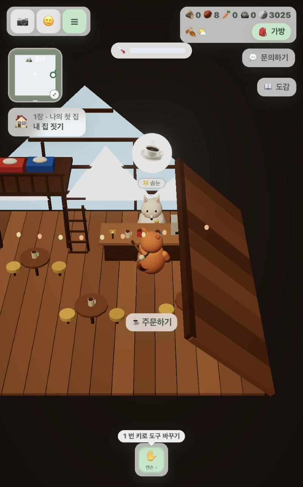
12카페 안. 북극여우 솜눈, 다락, 유리 박공 너머 설산
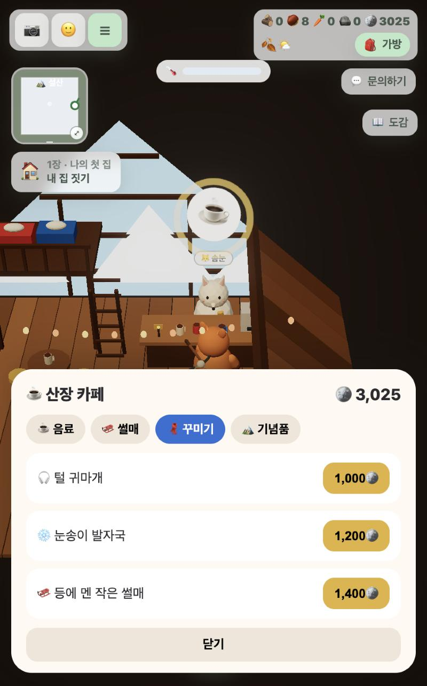
13주문 창 🧣 꾸미기 탭
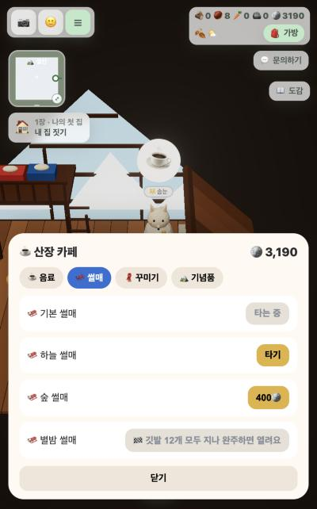
14🛷 썰매 탭(기본·하늘·숲·별밤, 별밤은 깃발 12개 완주 후)
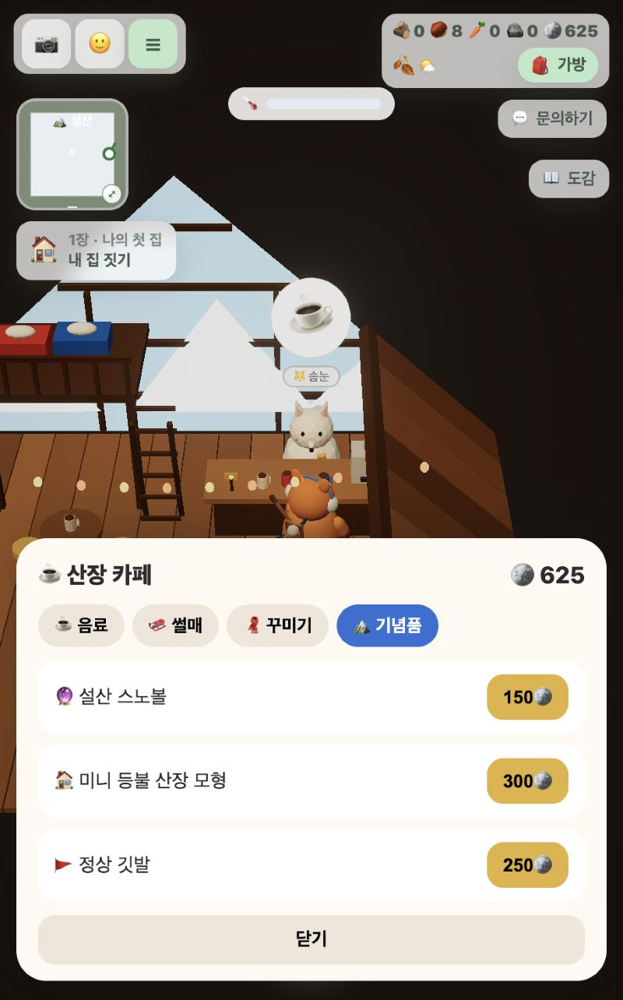
15🏔️ 기념품 탭, 캐릭터는 방금 산 털 귀마개를 착용
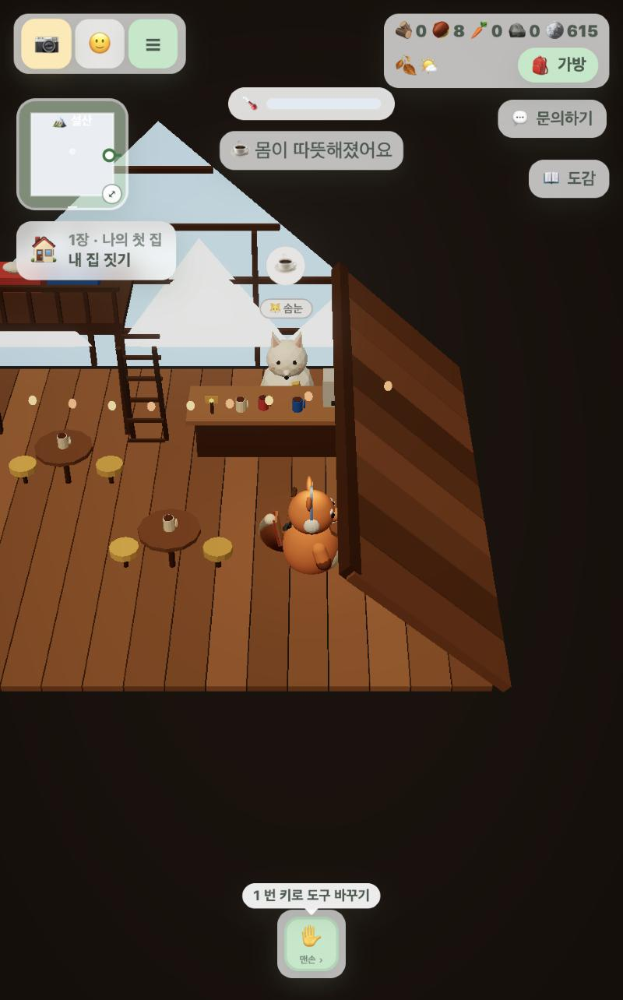
16코코아 구매 → 의자에 앉기, ☕ 몸이 따뜻해졌어요, 사진 버튼 반짝
5. 추위와 기념품
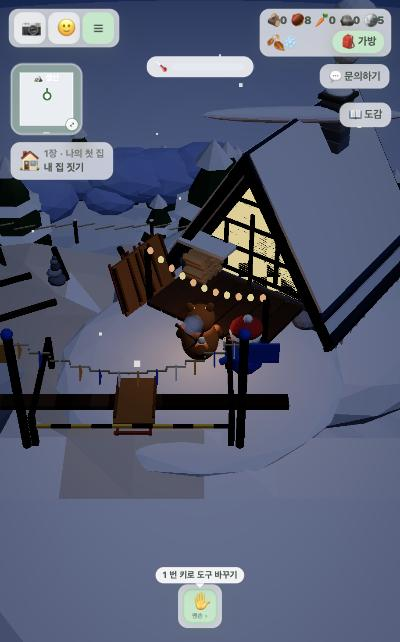
17눈 오는 밤 정상. 🌡️ 추위 막대가 차고, 80 이상이면 걸음이 느려짐
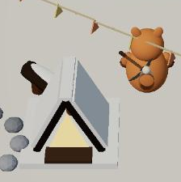
18기념품 미니 등불 산장 모형(눈 덮인 A자 지붕·불 켜진 박공)